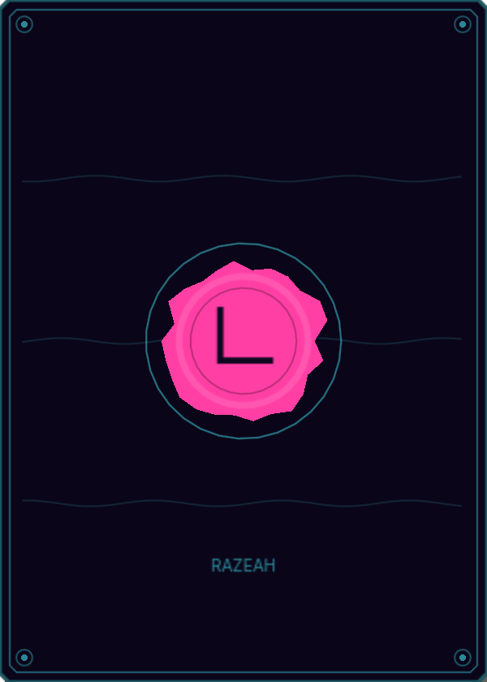
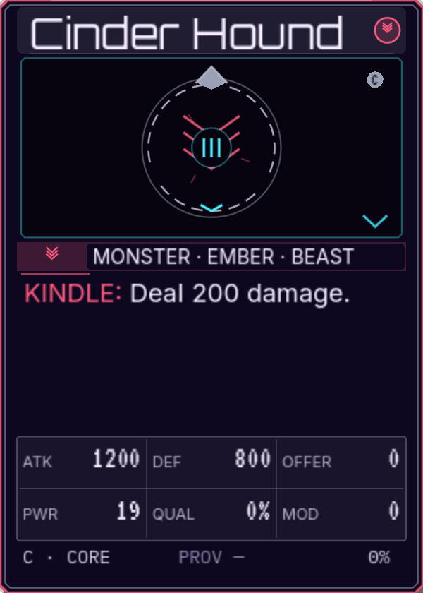
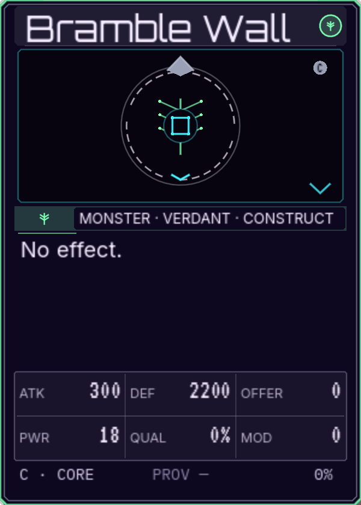
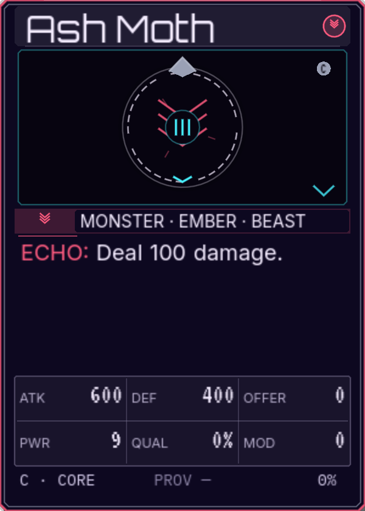
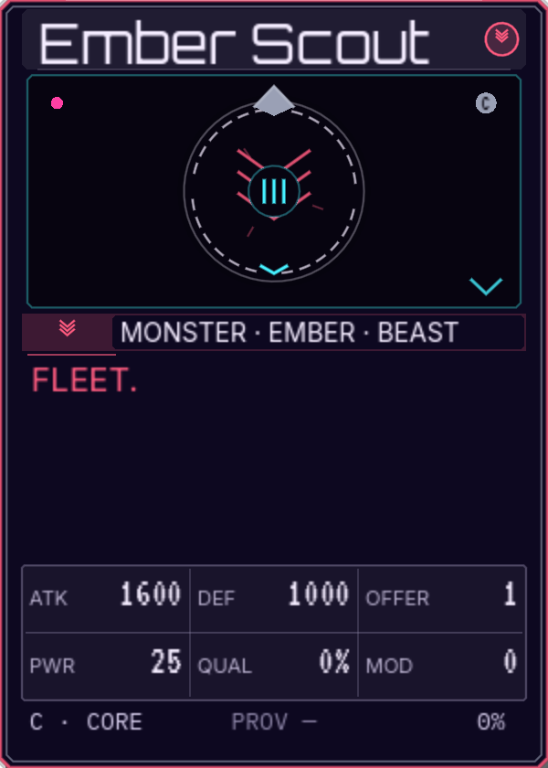

01
100% · the baseline
The 190 focus table with its current chrome. The card is chosen; the buttons, labels, pips, and tab are still built for a mouse and a young eye.
190px card 960×960 22px buttons 7px labels
YOU4,000
THE DAMP WARDEN4,000
⤢≡


+
+
+
+

+
+
+
+
34


LIVESTRIKEEND PHASERESET
What changes
The card is readable enough to start; the chrome is not. 22px buttons, 7–8px labels, a 44px tab, 1px borders, 4px pips. This is the “before” state.
The cost
The 960 square has 10px of slack. That slack is what the accessibility scale spends.